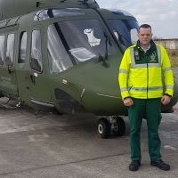
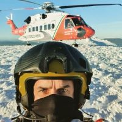
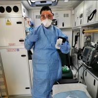

What we do, Our vision and values
When should you call 999?
You should call 999 when someone is seriously ill or injured and you think their life is at risk! For example, shortness of breath, persistent chest pains, stroke symptoms, serious bleeding or loss of consciousness.
What happens when you call 999?
When you call 999, an operator will ask you which emergency service you need. In a medical emergency, ask for the ambulance service. You will then be put through to one of our call-takers. They will ask you some questions about the patient and your location. This is so we can start arranging help straight away.
Get Involved with us
Ready to help us save lives? There has never been a more exciting time to join us. Over the last 10 years the role of frontline ambulance crew has changed dramatically and continues to evolve to meet a growing demand for urgent healthcare.
Working on the frontline
For those with drive and ambition we offer many diverse clinically focused career opportunities to deliver care to the communities we serve. These include working as a community paramedic in primary care, as an emergency care practitioner working in both the emergency and GP out of hours settings, or becoming a dispatcher in our modern control centres.
Meet our Staff
Edward
Meet Edward, a full-time Paramedic working in Newport Ambualnce Station for the past 8 years. Edward is a local man and passionate about caring for the community. He is currently studying for his Masters of Science, Emergency Medical Science. He is eager to progress his skills to further treat those in need and dreams of being a solo responder on our Rapid Response Vehicle.
Brian
Meet Brian, a former Paramedic who worked in Newport Ambulance Station for over a decade. Brian has many years of experience on the frontline both on an Emergency Ambulance and Rapid Response Vehicle. He has recently been appointed as an Advanced Paramedic with the Irish Coastguard helping save lives on both land and sea. Brian is also a local to Newport.
Patrick
Meet Patrick, a dedicated Paramedic from Co.Galway. Patrick divides his time between farming and serving the public working long hours day and night. Patrick also worked on our swabbing team during the Covid 19 pandemic giving up more of his time to serve the community. He recently transferred to Newport Ambulance Station to be closer to home.
